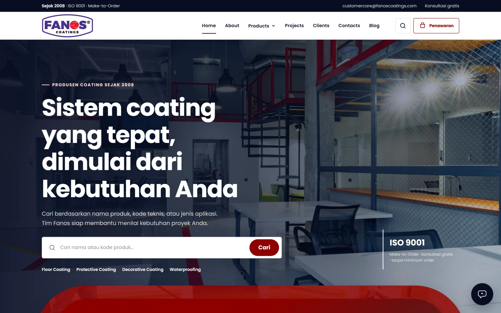
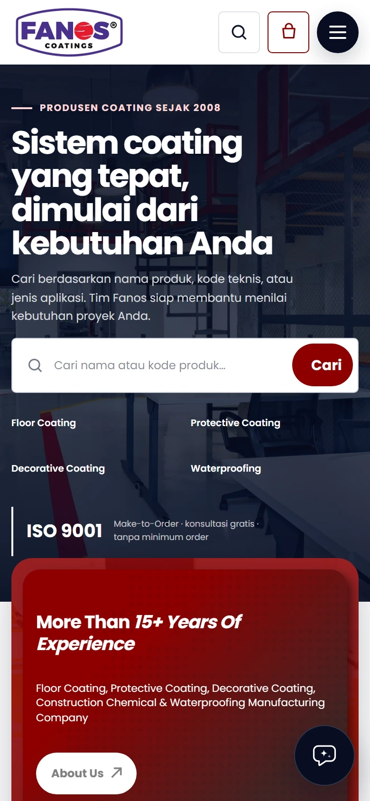
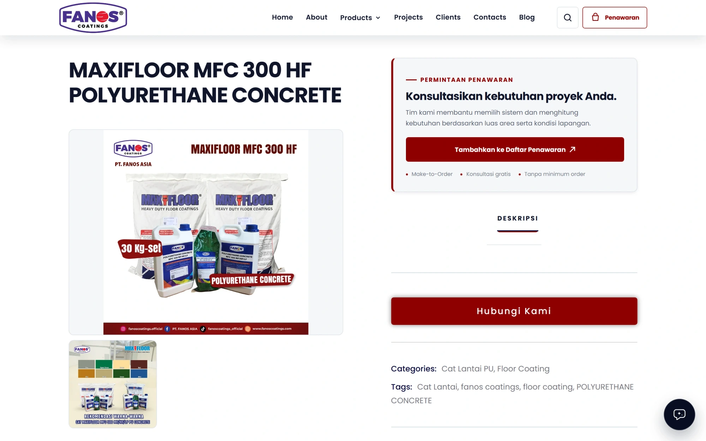
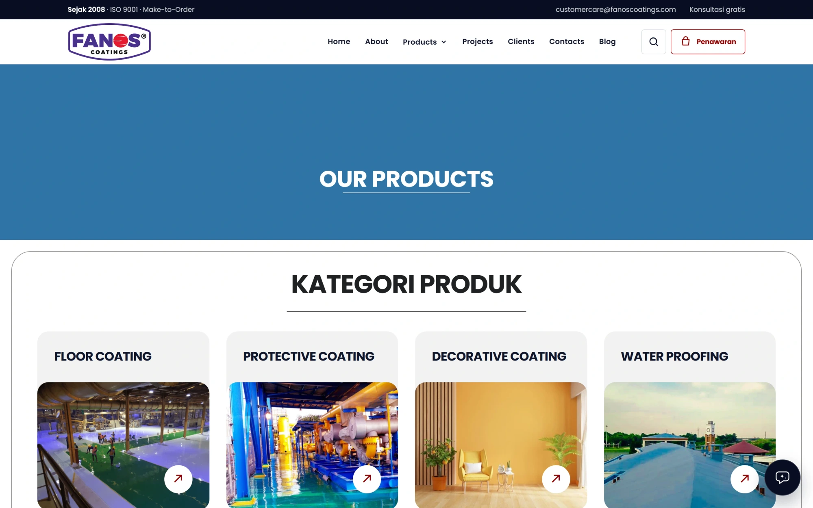
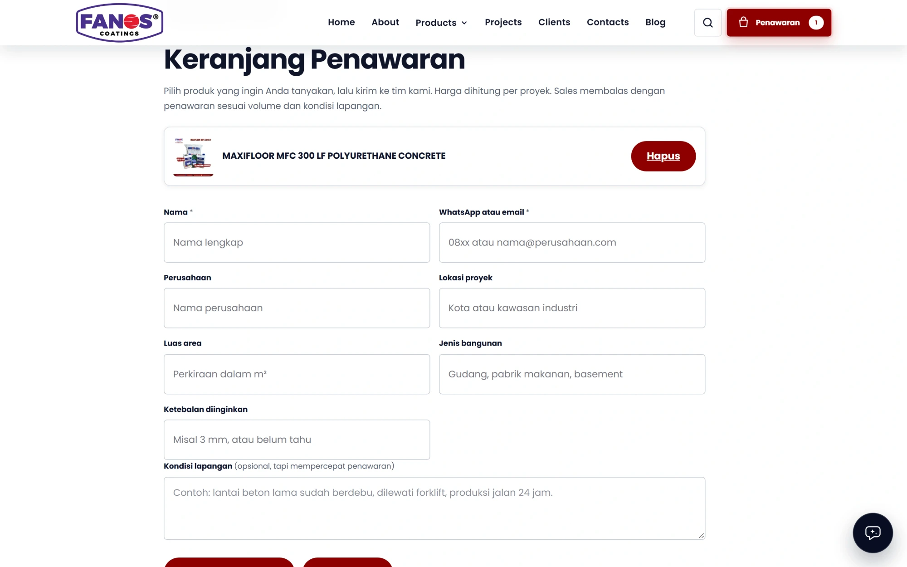

Pendiri Renoir menangani UI/UX, pengembangan situs, dan deployment.
Industrial Coatings Catalogue
Satu tim dari sketsa pertama sampai sistem yang berjalan.


Pendiri Renoir menangani UI/UX, pengembangan situs, dan deployment.
01 - Sketsa
Mulai dari masalah bisnis, bukan teknologinya.

Kategori dan pencarian.
Informasi produk yang relevan.
Jalur menghubungi tim.
02 - Desain
Desain disetujui sebelum kode ditulis.
Pengunjung dapat mengenali layanan dan membuka katalog produk.
03 - Bangun
Ditulis dari nol, terlihat di staging selama proses.

04 - Jalan
Domain, SSL, monitoring, dan backup sudah berjalan saat diserahkan.

Domain, SSL, dan deployment.
Monitoring dan backup sesuai lingkup.
Akses, dokumentasi, dan walkthrough.
Hasil - Industrial Coatings Catalogue
Katalog panjang tetap mudah dijelajahi: cari produk, baca detail, minta penawaran.


Mulai percakapan

Situs marketing & landing page
Sistem internal custom
UI/UX & identitas visual
Deploy & care · Deployment & perawatan